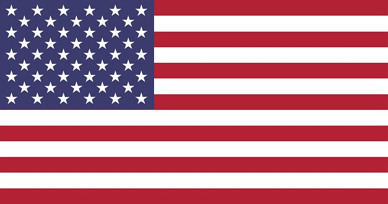

<!DOCTYPE html>
<html style="background:#D9C4B0" lang="de">
<head>
    <meta charset="UTF-8">
    <meta name="viewport" content="width=device-width, initial-scale=1.0">
    <title>Fähigkeiten und Sprache</title>
    <style>
        h1{
            color:##f3efd2;
            background-color:#CFAB8D}
        h2{color: #CFAB8D;
        background:##f3efd2}
        body{font-family: "Quicksand", sans-serif;}
    </style>

    <link rel="preconnect" href="https://fonts.googleapis.com">
    <link rel="preconnect" href="https://fonts.gstatic.com" crossorigin>
    <link href="https://fonts.googleapis.com/css2?family=Quicksand:wght@300..700&display=swap" rel="stylesheet">
</head>
<body>
    
</body>
</html>


<h1>Fähigkeiten und Sprachen</h1>
<hr/>
<h2>Fähigkeiten</h2>
<ul>
    <li>Projektmanagement & agile Methoden (SCRUM, Jira)</li>
    <li>3rd Level Support (OTRS Znuny)</li>
    <li>Produktmanagement in Softwareentwicklung (Anforderungsanalyse, User-Stories, Backlog Refinement, Testing)</li>
    <li>Wissensmanagement (Confluence, Sharepoint, Miro)</li>
    <li>Umfrageerstellung, Datenanalyse, statistische Methoden (SPSS, Excel)</li>
</ul>

<h2>Persönliche Stärken</h2>
<ul>
    <li>Kreativität</li>
    <li>Analytisches Denken und Problemlösementalität</li>
    <li>Wissensvermittlung und -aufbereitung</li>
    <li>Sprachlicher Ausdruck, Rechtschreibung, Grammatik</li>
    <li>Schnelle Auffassungsgabe, Wissbegierde</li>
</ul>

<h2>Fremdsprachen</h2>
<ul>
    
        
        Englisch C1
    <br/>
        
        Französisch B2
    <br/>
        
        Japanisch A1 Stufe 3

</ul>
